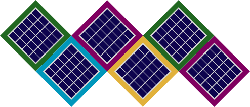

Created in 2019.
Dismanteled in 2021, some parts went to Böxli 2
Audio Input was though a standart audio jack.
Amplifier: 200W Bass Amplifier based on a diy kit. R/L Channel used a cheap 3W Amplifier.
Batteries: 2x 2Ah 20V Li-ion (power tool) battery. The amplifier required both a positive and negative power supply, so I used a complicated 3x3 channel switch to switch the batteries from parallel (to charge) to serial configuation. So either: {0V, 20V} or {-20V, 0, 20V}.
The battery could be charged with a 12V power supply, because there was a step-up inside the böxli.
I also assembled a foldable solar panel for it, but barely used it.
